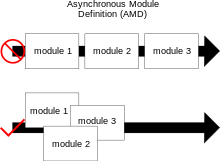

[Javascript] 모듈 시스템들 알아보기
서론
CS 스터디에서 7월 2일 발표한 모듈 시스템에 대해 정리한 문서를 블로그에 공유하고자 한다.
Module in Javascript
Javascript에서 모듈이란, 다른 프로그래밍 언어의 모듈처럼, 커진 자바스크립트 코드들을 여러 파일로 분리하는 것을 말합니다.
초기에는 자바스크립트 코드들이 크기도 작고 단순한 작업을 수행했기 때문에 코드의 분리를 필요로 하지 않았지만, 자바스크립트가 완전한 애플리케이션을 실행할 수 있게 되고, 이에 따라 코드의 크기도 커지고 복잡해졌습니다.
특히 기존의 경우, <script> 태그를 통해 여러 자바스크립트 파일을 불러올 수 밖에 없었는데, 이들은 전역 네임스페이스를 공유하기 때문에 이전 스크립트의 변수를 뒤집어쓰는 등 혼동을 초래하기 쉬웠습니다.
따라서 이들을 보완하고자, 자바스크립트를 모듈화 하는 방법에 대해 여러 매커니즘이 등장하게 되었습니다.
이러한 모듈 시스템으로는 주로 AMD, CommonJS, UMD, ESM 4개의 시스템이 주로 사용됩니다.
상세하게는, AMD, CommonJS, UMD와 같은 비표준 시스템이 등장해 사용되다가, ES2015(ES6)에 ESM(ES Modules)가 등장하므로써 모듈 시스템이 표준으로 자리잡게 되었습니다.
2018년 Firefox 60이 등장한 이후, 모든 주요 브라우저들은 ES Module을 지원하게 되었으며 CommonJS를 기본적으로 지원하는 Node.js 역시 12버전 부터 ESM를 지원하기 시작했으며, 현재 완전한 지원(fully-support)을 제공하고 있습니다.
Node.js fully supports ECMAScript modules as they are currently specified and provides interoperability between them and its original module format, CommonJS.
AMD
Asynchronous module definition(비동기 모듈 정의), 줄여서 AMD란 비동기적으로 모듈과 그 종속성을 불러올 수 있도록 모듈을 정의하는 메커니즘을 말합니다.

위 그림처럼, AMD 방식은 불러올 파일들 간에 종속성이 존재하더라도 이들을 순서대로 로딩하지 않고 모두 개별적으로 로딩할 수 있습니다.
AMD는 전역 변수(또는 자유 변수)로 사용할 수 있는 함수인 define()과, CommonJS와의 상호운용성을 제공하기 위해 유사한 형태의 exports와 require() 인터페이스를 제공합니다. (다만, 보통 define()을 사용하는 것이 더 선호됩니다.)
자유 변수: 함수에 사용되는 변수 중 지역 변수 또는 해당 함수의 매개 변수가 아닌 변수를 의미합니다.
알려진AMD구현체로는 Dojo Toolkit, RequireJS 등이 있습니다.
API 사양 #
define() 함수
전역변수로 사용할 수 있는 이 함수는 일종의 네임스페이스 역할을 해, 모듈에서 사용하는 변수와 전역 변수를 분리하는 역할을 해주는 함수입니다. 이를 통해 브라우저 환경의 Javascript에는 존재하지 않는 파일 스코프를 대신할 수 있습니다.
define() 함수는 다음과 같은 함수 시그니처를 가지며, 각 인수들은 다음을 뜻합니다.
define(id?, dependencies?, factory);
id모듈을 식별하는데 사용되는 인수로,문자열 리터럴입니다.- 선택 사항이며, 이 값이 주어지지 않으면 로더가 요청하는 <script> 태그의 src 값(id)를 기본 id로 설정합니다.
- 만약 명시할 경우, 모듈 id는 반드시
최상위또는절대 id(절대 경로)여야 합니다.
- 만약 명시할 경우, 모듈 id는 반드시
모듈 id는 정의중인 모듈을 식별하는데 사용할 수 있고, 종속성 배열 인수에도 사용됩니다.AMD의모듈 id는 CommonJS 모듈 식별자에서 허용되는 것의 상위 집합입니다.- 모듈 식별자는
/(슬래쉬)로 구분되는용어들(terms)의 문자열입니다. 용어는 카멜 케이스 식별자,.또는..여야 합니다.- 모듈 식별자는
".js"와 같은 파일이름 확장자를 가질 수 없습니다. - 모듈 식별자는
상대적이거나,최상위일 수 있습니다. 만약 첫 번째 용어가.또는..인 경우상대적입니다. 최상위식별자는 개념적 모듈 네임스페이스루트에서 확인됩니다.상대적식별자는require코드가 작성 및 호출되는 모듈의 식별자를 기준으로 합니다.- 만약
a/b/c모듈이../d모듈을 요청하면, 이는a/d로 요청됩니다. - 만약
a/b/c모듈이./e모듈을 요청하면, 이는a/b/e로 요청됩니다.
- 만약
- 모듈 식별자는
dependencies- 현재 정의 중인 모듈에 필요한 의존성인
모듈 id의 배열 리터럴입니다. - 이는 모듈 팩토리 함수가 실행되기 전 요청되어야 하며, 요청된 값은
의존성 배열에서의 인덱스와 동일한 순서로팩토리 함수의 인자로 전달되어야 합니다. 종속성 모듈 id는상대적 id일 수 있으며, 정의되는 모듈을 기준으로 요청됩니다.- 만약 종속성 목록에
require,exports,module이라는 값이 등장한다면 이는CommonJS모듈 사양에 정의된 해당 자유 변수로 해석되어야 합니다. - 만약 이를 생략하면, 기본 값은
["require", "exports", "module"]이 됩니다. - 그러나 팩토리 함수의항수(매개변수의 개수)가 3보다 작은 경우, 로더는 함수의항수(또는 길이)에 해당하는 수의 인수만 사용해 팩토리 함수를 호출하도록 선택할 수 있습니다.
- 현재 정의 중인 모듈에 필요한 의존성인
factory- 모듈 또는 객체를 인스턴스화하기위해 실행해야 하는 함수입니다.
- 만약
factory가 함수라면싱글톤으로 한 번만 실행되며, 객체인 경우 해당 객체를 모듈의exports객체의 속성값으로 할당합니다.- 만약
factory함수가 값(객체,함수, 또는true로 인식되는 모든 값)을 반환할 경우, 이 역시 해당 값을exports객체의 속성값으로 할당합니다.
- 만약
define.amd 프로퍼티
<script> src 브라우저 로딩에 필요한 전역 define 함수가 AMD API를 준수한다는 표시를 하기 위해, 모든 전역 define 함수는 값이 객체인 amd 라는 프로퍼티를 갖고 있어야 합니다.
이는 AMD API를 준수하지 않는 define 함수를 정의하는 다른 코드와의 충돌을 막을 수 있습니다.
define.amd객체 내부의 속성은 지정되어 있지 않기 때문에, AMD 로더 구현체에 따라 해당 객체 내부의 프로퍼티를 활용해 여러 기능들을 추가할 수 있습니다.
예시 코드
define("alpha", ["require", "exports", "beta"], function (require, exports, beta) {
// 외부에 verb 라는 프로퍼티를 내보냄
exports.verb = function() {
// 의존성으로 설정된 다른 모듈을 사용하려면
// 넘겨받는 인수를 사용하거나,
return beta.verb();
// 또는 require()를 이용해
// 얻어 온 모듈을 사용해도 된다.
return require("beta").verb();
}
});
장점
전역변수 문제가 없음
define() 함수를 이용해 모듈을 구현하므로, 즉, 클로저를 사용해 모듈 정의를 캡슐화 하므로 전역 네임스페이스 오염을 방지할 수 있습니다.
CommonJS와의 상호운용성을 제공함
CommonJS
CommonJS란 모질라의 Kevin Dangoor에 의해 2009년 시작된(당시 이름은 ServerJS), “웹 브라우저 외부(특히 웹 서버 등 서버사이드)에서의 Javascript용 모듈 생태계를 표준화하기 위한 명세"를 포함한 프로젝트를 말합니다.
웹 브라우저 외부(특히 서버사이드)에서의 사용을 목표로 했기 때문에, Node.js와 같은 런타임에서 채택해 사용 중입니다.
특징
CommonJS는동기식모듈 시스템이기 때문에, 특정 모듈을import한 경우 해당 모듈이 로드될 때 까지 코드 실행이 중단됩니다.- 모듈을 가져오기 위해
require함수를, 모듈을 내보내기 위해module.exports객체를 사용합니다.
API 명세 #
앞서 설명한 것 처럼, CommonJS에서 모듈을 불러오고, 내보내기 위해 require() 함수와 module.exports 객체를 사용합니다.
API 명세에는 이들에 대해 다음과 같은 계약이 명시되어 있으며, CommonJS 구현체들은 이를 지켜야 합니다.
requirerequire()함수는모듈 식별자(id)를 인자로 받으며, 해당 모듈이내보낸 API를 반환합니다.- 만약
의존성 사이클이 존재할 경우, 외부 모듈이전이적 의존성중 하나에 의해require될 때 실행이 완료되지 않았을 수 있습니다.전이적 의존성: A가 B를 의존하고, B가 C를 의존할 경우 C는 A의 전이적 의존성이다.- 이 경우,
require가 반환하는 객체에는 현재 모듈의 실행을 유도한require의 실행 이전에 준비된 하나 이상의exports를 포함해야 합니다.
- 요청된 모듈이 반환될 수 없으면,
require는 에러를 던져야 합니다. require함수는main프로퍼티를 가질 수 있으며, 이는undefined이거나 로드된 모듈의module객체와 동일해야 합니다.require함수는paths속성을 가질 수 있으며, 이는 최상위 모듈 디렉토리 까지의 경로를 우선순위대로 배열한 문자열 배열입니다.
modulemodule컨텍스트 안에는 위 정의를 따르는 자유 변수인require가 있습니다.module컨텍스트 안에는 모듈이 실행될 때 API를 추가할 수 있는 객체인 자유 변수exports가 있습니다.- 모듈은
exports를 유일한 내보내기 수단으로 사용해야 합니다.
- 모듈은
module안에는module이라는 객체인 자유 변수가 존재해야 합니다.module객체는 모듈의 최상위 식별자인id프로퍼티를 갖고 있어야 합니다.- 또한 이
id프로퍼티를 사용해require(module.id)를 호출한 경우,module.id의 출처가 된exports객체를 반환해야 합니다.
- 또한 이
module객체는 모듈이 생성된 리소스에 대한 정규화된 URI인uri문자열이 있을 수 있습니다.
예시 코드
// customers.js
var customers = ["Rachel", "Galen", "Charles"]
// 해당 모듈에서 내보내고자 하는 것들을 `exports`에 담아줍니다.
// exports에 포함되지 않은 지역 변수는 외부에서 접근할 수 없습니다.
module.exports = {
getCustomers: function () {
return users
},
sortCustomers: function () {
return users.sort()
},
firstCustomer: function () {
return users[0]
}
}
// acounting.js
const customers = require('./customers')
customers.getCustomers() // ["Rachel", "Galen", "Charles"]
customers.sortCustomers() // ["Charles", "Galen", "Rachel"]
customers.firsCustomer() // ["Charles"]
장점
배우고 사용하기 쉬움
Node.js에서 널리 사용됨
동기식이기 때문에, 모듈 실행 전 모든 종속성이 로드됨을 보장함
단점
동기식이기 때문에, 대규모 앱에서 성능 문제를 야기할 수 있음
모든 파일이 로컬 디스크에 있어 필요할 때 바로 불러올 수 있는 상황을 전제, 즉 동기적으로 동작 가능한 Server-side JS 환경을 전제로 하기 때문입니다.
tree-shaking이 없기 때문에 번들 크기가 커질 수 있음
브라우저에서 지원하지 않기 때문에, 클라이언트 측 개발에 적합하지 않음
만약 브라우저측에서 사용하고 싶다면 트랜스컴파일이 필요합니다.
UMD
Universal Module Definition(범용 모듈 정의), 줄여서 UMD란 모듈 작성 방식이 CommonJS와 AMD 두 방식으로 나누어져서 호환 문제가 발생하자, 이를 해결하기 위해 나온 디자인 패턴입니다.
CommonJS 방식과 AMD 방식 모두 사용할 수 있다는 장점이 있기 때문에 여러 모듈 로더에서 사용할 수 있습니다.
예시 코드 #
// 모듈을 생성하기 위해 CommonJS, AMD, 또는 이외의 브라우저 global을 사용합니다.
// 해당 예시는 `b` 라는 모듈을 의존하는 모듈을 불러옵니다.
// 만약 브라우저 전역 경로(global path)를 사용하고 싶지 않다면, 인수로 root 대신 `this`를 넘겨주어야 합니다.
// 모듈 로더를 확인하는 IIFE(즉시 실행 함수)
(function (root, factory) {
if (typeof define === 'function' && define.amd) {
// AMD 방식. 익명 모듈로 등록합니다.
define(['exports', 'b'], factory);
} else if (typeof exports === 'object' && typeof exports.nodeName !== 'string') {
// CommonJS
factory(exports, require('b'));
} else {
// Browser globals
factory((root.commonJsStrict = {}), root.b);
}
}(typeof self !== 'undefined' ? self : this, function (exports, b) {
// Use b in some fashion.
// `exports` 객체에 프로퍼티를 추가해 모듈로 내보낼 프로퍼티들을 정의합니다.
exports.action = function () {};
}));
ESM
ECMAScript Module, 줄여서 ESM(또는 ES Module)이란 ECMAScript2015(ES6)에 도입된 네이티브 모듈 시스템을 말합니다. 즉 Javascript 언어의 일부로 모듈 시스템이 자리잡은 것으로, 웹 브라우저는 물론 Node.js와 같은 런타임에서도 광범위하게 지원되고 있습니다.
ES Module을 사용하기 위해서는 <script type="module"> 로 스크립트를 불러오거나, Node.js의 경우 package.json 파일에 "type": "module" 속성을 추가하거나 파일 확장자를 .mjs로 설정해야 합니다.
- 추가로, 만약 파일 확장자가
.cjs라면 항상package설정에 상관 없이CommonJS모듈로 취급됩니다.
로드 과정
ES Module은 비동기적으로 모듈을 불러온다고 알려져 있는데, 이는 ES Module 을 불러오는 3단계 과정이 개별적으로 될 수 있기 때문입니다.
ECMAScript 명세에 따르면, 3단계 과정은 다음과 같습니다.
LoadRequestedModules()- 모든 종속성들을 재귀적으로 로드해 모듈을
연결(Link)할 준비를 하고,Promise를 반환합니다.- 모듈들을 비동기적으로 불러와,
모듈 레코드로 저장합니다.
- 모듈들을 비동기적으로 불러와,
- 모든 종속성들을 재귀적으로 로드해 모듈을
Link()- 모듈의 모든 종속성들을 전이적으로 불러오고,
모듈 환경 레코드(Module Environment Record)를 생성해 모듈을 평가할 수 있도록 준비합니다.- 모듈의
exports와 메모리 상의imports를 연결합니다.
- 모듈의
- 모듈의 모든 종속성들을 전이적으로 불러오고,
Evaluate()- 모듈과 종속성의 평가에 대한
Promise를 반환합니다. 평가가 성공적으로 이뤄진 경우resolve, 에러가 발생한 경우reject합니다. host는Promise가reject된 경우 평가 에러를 던져야 합니다.- 코드를 실행해 변수의 실제 값(모듈 레코드)으로 채웁니다.
- 모듈과 종속성의 평가에 대한
명세 #
ES Module은 export 문을 통해 내보내고, import 문을 통해 다른 모듈을 불러옵니다.
export- 내보내고 싶은 항목 앞에 export를 배치하거나, 중괄호로 묶어 내보낼 수 있습니다.
- 또는
default로export할 수 있는데, 이는CommonJS와AMD모듈 시스템과 함께 상호운용하는데 도움이 됩니다. - 또한,
as키워드를 활용해 새로운 이름으로 내보낼 수도 있습니다. - 추가로, 다른 모듈의 요소들을 불러와 함께
export할 수도 있습니다.
// 1. 내보내고 싶은 항목 앞에 export 배치
export const name = "square";
// 2. 내보내고 싶은 항목들을 중괄호로 묶기
export { name, draw, reportArea, reportPerimeter };
// 3. 내보내고 싶은 항목을 default로 내보내기
export default randomSquare;
// 4. as를 사용해 새로운 이름으로 내보내기
export { function1 as newFunctionName, function2 as anotherNewFunctionName };
// 5. 다른 모듈의 요소들 함께 export 하기
// 현재 모듈과 다른 모듈의 요소들을 함께 내보내고 싶다면 다음과 같이 할 수 있습니다.
export { name } from "x.js";
import- 불러오고 싶은 모듈의 항목들을 쉼표로 구분해 나열한 뒤 중괄호로 묶어 불러올 수 있습니다.
from을 통해 모듈 파일 경로를 작성해야 하는데, 전체 절대 경로를 작성하거나, 상대 경로를 사용할 수 있습니다.- 이 역시
export와 마찬가지로,as키워드를 활용해 새로운 이름으로 불러올 수 있습니다. - 추가로,
import()함수를 통해 모듈을 동적으로 불러올 수 있습니다.
// 1. 불러오고 싶은 항목들을 지정해 묶어 불러오기
import { name, draw, reportArea, reportPerimeter } from "./modules/square.js";
// 2. 모듈 객체로 묶어 불러오기
import * as Module from "./modules/module.js";
// 3. default로 내보낸 모듈 불러오기
import randomSquare from "./modules/square.js";
// 위는 아래 코드를 단축한 형태와 같습니다.
import { default as randomSquare } from "./modules/square.js";
// 4. as를 사용해 새로운 이름으로 불러오기
import {
function1 as newFunctionName,
function2 as anotherNewFunctionName,
} from "./modules/module.js";
// 5. 동적으로 모듈 불러오기
import("/modules/myModule.js").then((module) => {
// Do something with the module.
});
장점
자바스크립트 언어에 내장된 표준화된 모듈 시스템임
비동기 방식으로 모듈을 로딩해 성능 향상
Tree-shaking을 통해 번들 크기 줄일 수 있음
단점
비교적 최근에 등장했기 때문에, 구형 브라우저에서는 완전히 지원되지 않음
모듈을 import 하고 export 하는 구문이 복잡할 수 있음
모듈을 캐시하지 않아 추가적인 네트워크 요청 발생 가능
모듈이 로드되면 메모리에 캐시하는 CommonJS와 달리, 기본적으로 모듈을 캐시하지 않습니다.
참고
- AMD · amdjs/amdjs-api Wiki (github.com)
- Asynchronous module definition - Wikipedia
- Why AMD? (requirejs.org)
- JavaScript 표준을 위한 움직임: CommonJS와 AMD (naver.com)
- Modules/1.1.1 - CommonJS Spec Wiki
- umdjs/umd: UMD (Universal Module Definition) patterns for JavaScript modules that work everywhere. (github.com)
- CommonJS and the History of Javascript Modularity | by Lisa Berteau Smith | Medium
- Understanding CommonJS vs. ES Modules in JavaScript (syncfusion.com)
- ES modules: A cartoon deep-dive - Mozilla Hacks - the Web developer blog
- ECMAScript® 2025 Language Specification (tc39.es)
- Modules in JavaScript – CommonJS and ESmodules Explained (freecodecamp.org)
- JavaScript Modules – A Beginner’s Guide (freecodecamp.org)